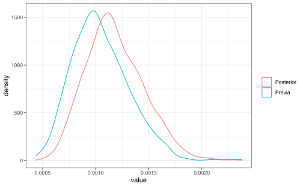
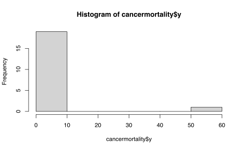
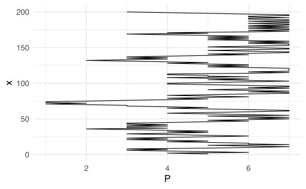
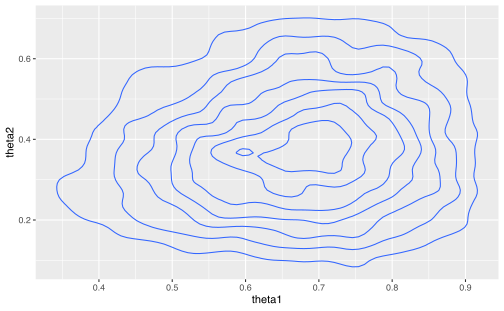
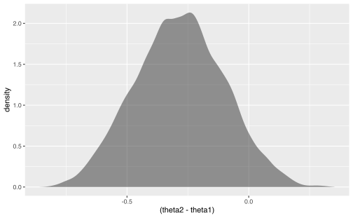
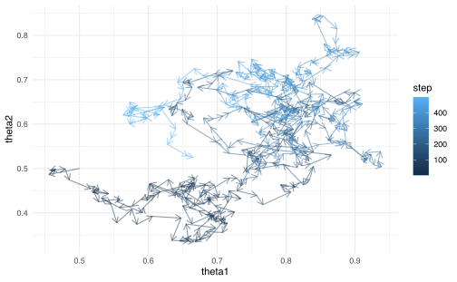
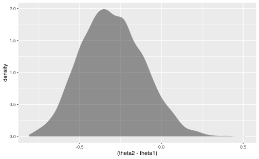
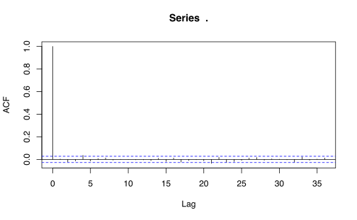
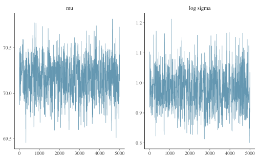

Capítulo 9 Cálculo Bayesiano Computacional
9.1 Repaso de Estadística Bayesiana
9.1.1 Modelo de un parámetro
Vamos a considerar el ejemplo en la sección 3.3 del (Albert et al. 2009). En este caso se quiere estimar la tasa de éxito en transplantes de corazón en un hospital de EEUU. Suponga que en ese hospital hay \(n\) transplantes e \(y\) es el número de muertes en el transcurso de 30 días del transplante. Si se sabe el número esperado de muertes \(e\) a través de un modelo auxiliar, entonces un modelo sencillo para \(y\) es asumir que: \[y\sim \text{Poisson}(e\lambda)\] donde \(\lambda\) es la tasa de mortalidad por unidad de exposición y tiempo.
- Solución clásica:
-
Estimar \(\hat \lambda=y/e\), pero el estimador es malo si hay pocas muertes observadas \(y\).
- Solución bayesiana:
-
Considere una previa conjugada (gamma) para \(\lambda\) de la forma,
\[p(\lambda)\propto \lambda^{\alpha-1}\exp(-\beta \lambda).\]
La ventaja de los modelos bayesianos es que se pueden integrar información externa al modelo. Supongamos que se cuenta con información externa de un grupo pequeño de hospitales con condiciones similares a la del hospital de interés, es decir se cuenta con muertes \(z_j\) y exposición \(o_j\) para diez hospitales (\(j=1,\ldots,10\)). Asumamos que cada hospital tiene el la distribución de sus muertes de la forma,
\[z_j\sim \text{Poisson}(o_j\lambda).\]
Entonces, asignamos una previa no-informativa a \(p(\lambda)\propto \lambda^{-1}\) (cuando \(\alpha=0\) y \(\lambda=0\)) y se obtiene un previa actualiza con todos los hospitales para \(\lambda\) de la forma,
\[p(\lambda)\propto \lambda^{\sum_{j=1}^{10}z_j-1}\exp{\left(-\lambda\sum_{j=1}^{10} o_j\right)}\]
Suponga que \(\alpha:=\sum z_j=16\) y \(\beta:=\sum o_j=15174\). Si para el hospital de interés \(y_{obs}\) es el número observado de muertes y \(e\) es la exposición entonces la distribución posterior de \(\lambda\) es: \[g(\lambda|y_{obs})\sim \Gamma(\alpha+y_{obs},\beta+e)\] y la densidad predictiva de \(y\) es (Ejercicio): \[f(y)=\frac{f(y|\lambda)p(\lambda)}{g(\lambda|y_{obs})}\]
donde \(f(y|\lambda)\sim \text{Poisson}(e\lambda)\) (verosimilitud).
Supongamos que existen dos posibles hospitales:
- Hospital A: Se observa una muerte con 66 personas expuestas. Cálculo de la densidad posterior y densidad predictiva con \(\lambda = \alpha/\beta\):
alpha <- 16
beta <- 15174
yobs <- 1
ex <- 66
y <- 0:10
lam <- alpha/beta
## f(y|lambda) p(lambda) / g(lambda|y_obs)
fy <- dpois(y, lam * ex) * dgamma(lam, shape = alpha,
rate = beta)/dgamma(lam, shape = alpha + y, rate = beta +
ex)
dpred <- tibble(y, fy)
ggplot(dpred) + geom_line(mapping = aes(x = y, y = fy)) +
geom_vline(xintercept = yobs, col = "red") + theme_bw()
por lo tanto una muerte no es un valor inusual en el comportamiento de muertes bajo transplantes. La comparación de las densidades posterior y previa de lambda:
set.seed(1)
lambda_prev <- rgamma(1000, shape = alpha, rate = beta)
lambda_post <- rgamma(1000, shape = alpha + yobs, rate = beta +
ex)
datoslambda <- tibble(Previa = lambda_prev, Posterior = lambda_post) %>%
pivot_longer(cols = everything())
ggplot(data = datoslambda) + geom_density(mapping = aes(x = value,
color = name)) + theme_bw() + theme(legend.title = element_blank())
- Hospital B: 4 muertes en 1767 expuestos. Mismos cálculos:
alpha <- 16
beta <- 15174
yobs <- 4
ex <- 1767
y <- 0:10
lam <- alpha/beta
fy <- dpois(y, lam * ex) * dgamma(lam, shape = alpha,
rate = beta)/dgamma(lam, shape = alpha + y, rate = beta +
ex)
dpred <- tibble(y, fy)
ggplot(dpred) + geom_line(mapping = aes(x = y, y = fy)) +
geom_vline(xintercept = yobs, col = 2) + theme_bw()set.seed(1)
lambda_prev <- rgamma(1000, shape = alpha, rate = beta)
lambda_post <- rgamma(1000, shape = alpha + yobs, rate = beta +
ex)
datoslambda <- tibble(Previa = lambda_prev, Posterior = lambda_post) %>%
pivot_longer(cols = everything())
ggplot(data = datoslambda) + geom_density(mapping = aes(x = value,
color = name)) + theme_bw() + theme(legend.title = element_blank())
9.1.2 Modelo de más de un parámetro
Se usará el ejemplo de la sección 4.2 del (Albert et al. 2009) para ilustrar la inferencia bayesiana conjugada en el caso de más un parámetro. Suponga que se tiene datos del tiempo en completar la maratón de Nueva York para 20 atletas entre 20 y 29 años y asumimos que la muestra proviene de una \(N(\mu,\sigma^2)\). Si asumimos la previa no informativa:
\[g(\mu,\sigma^2) \propto 1/\sigma^2\]
entonces la distribución posterior de \((\mu,\sigma^2)\) es: \[g(\mu,\sigma^2|y)\propto \frac{1}{(\sigma^2)^{n/2+1}}\exp{\left(-\frac{1}{2\sigma^2}\left(S+n(\mu-\bar y)^2\right)\right)}\]
donde \(n\) es el tamaño de muestra, \(\bar y\) es la media empírica y \(S=\sum_{i=1}^n(y_i-\bar y)^2\). Recuerden que la distribución posterior conjunta satisface:
- La distribución posterior de \(\mu\) condicional en \(\sigma^2\) se distribuye como \(N(\bar y,\sigma/\sqrt{n})\).
- La distribución posterior marginal de \(\sigma^2\) se distribuye según \(S\chi_{n-1}^{-2}\) (\(S\) veces una chi-cuadrada inversa con \(n-1\) grados de libertad).
Cargamos los datos de los 20 atletas:
library(LearnBayes)
head(marathontimes)## time
## 1 182
## 2 201
## 3 221
## 4 234
## 5 237
## 6 251y graficamos un diagrama de contorno de la distribución posterior de \(\mu,\sigma^2\):
attach(marathontimes)
mycontour(logf = normchi2post, limits = c(220, 330,
500, 9000), data = time, xlab = "media", ylab = "varianza")y les agregamos una muestra aleatoria de tamaño 1000 de la distribución posterior conjunta, generada a través de las distribuciones marginales:
S <- sum((time - mean(time))^2)
n <- length(time)
sigma2 <- S/rchisq(1000, n - 1)
mu <- rnorm(1000, mean = mean(time), sd = sqrt(sigma2)/sqrt(n))
mycontour(normchi2post, c(220, 330, 500, 9000), time,
xlab = "media", ylab = "varianza")
points(mu, sigma2)
Si estamos interesados en hacer inferencia de \(\mu\), podemos calcular un intervalo de credibilidad al 95%, usando la muestra marginal:
quantile(mu, c(0.025, 0.975))## 2.5% 97.5%
## 255.1484 301.2853y también inferencia sobre \(\sigma\):
quantile(sqrt(sigma2), c(0.025, 0.975))## 2.5% 97.5%
## 37.66930 72.69096o aún sobre otros parámetros, por ejemplo el coeficiente de variación (\(CV=\sigma/\mu\)):
quantile(sqrt(sigma2)/mu, c(0.025, 0.975))## 2.5% 97.5%
## 0.1334257 0.26771189.2 Motivación: Cálculo de Integrales
Recuerden que según el teorema de Bayes, si observamos datos \(y\) a partir de una verosimilitud \(f(y|\theta)\) y se le asigna al parámetro \(\theta\) una previa \(g(\theta)\), entonces:
\[g(\theta|y)\propto g(\theta)f(y|\theta)\]
Problema: tratar de manejar la distribución posterior de \(\theta\) desde un punto de vista computacional con el fin de hacer inferencia.
Los procesos de inferencia requieren el cálculo o aproximación de integrales, por ejemplo:
- Valor esperado de una función de \(\theta\):
\[E(h(\theta)|y)=\frac{\int h(\theta)g(\theta)f(y|\theta) d\theta}{\int g(\theta)f(y|\theta) d\theta}\]
- Probabilidad posterior de que \(h(\theta) \in A\):
\[P(h(\theta) \in A|y)=\frac{\int_{h(\theta) \in A} g(\theta)f(y|\theta) d\theta}{\int g(\theta)f(y|\theta) d\theta}\] - Densidades marginales. Si \(\theta=(\theta_1,\theta_2)\) y se quiere obtener la distribución para \(\theta_1\), entonces se integra con respecto a \(\theta_2\).
\[g(\theta_1|y)\propto \int g(\theta_1,\theta_2|y)d\theta_2\]
9.3 Ejemplo base: modelo beta-binomial.
En este ejemplo se estimará las tasas de muerte por cáncer gástrico en una población de hombres entre 45 y 64 años. Para ello se tiene datos de muertes \(y_j\) y exposición \(n_j\) para 20 ciudades en Missouri:
data("cancermortality")
head(cancermortality)## y n
## 1 0 1083
## 2 0 855
## 3 2 3461
## 4 0 657
## 5 1 1208
## 6 1 1025Un primer intento de modelación podría considerar \(y_j\sim \text{Binomial}(p,n_j)\). Es decir que existe una probabilidad común \(p\) para toda la población.
(p_emp <- sum(cancermortality$y)/(sum(cancermortality$n)))## [1] 0.0009933126hist(cancermortality$y)
hist(cancermortality$n)En este caso se puede comprobar que el modelo binomial no logra captar la variabilidad de las muertes totalmente.
Otro intento de modelación que no tiene ese problema es un modelo beta-binomial con media \(\eta\) y precisión \(K\): \[f(y_j|\eta,K)={n_j \choose y_j}\frac{B(K\eta+y_j,K(1-\eta)+n_j-y_j)}{B(K\eta,K(1-\eta))}\] con previa no informativa: \[g(\eta,K)\propto \frac{1}{\eta(1-\eta)}\frac{1}{(1+K)^2}\] entonces la densidad posterior de los parámetros sería: \[g(\eta,K|\text{datos})\propto \frac{1}{\eta(1-\eta)}\frac{1}{(1+K)^2} \prod_{j=1}^{20}\frac{B(K\eta+y_j,K(1-\eta)+n_j-y_j)}{B(K\eta,K(1-\eta))}\] donde \(0<\eta<1\), \(K>0\) y \(B(\cdot,\cdot)\) es la función beta. La función betabinexch0 contiene la implementación de la log-densidad posterior de \(\eta,K\):
mycontour(betabinexch0, c(1e-04, 0.003, 1, 20000),
cancermortality, xlab = "eta", ylab = "K")y note la gran asimetría en el comportamiento de la densidad conjunta, especialmente en la dirección de la variable \(K\). Por el dominio de las variables \(K\) y \(\eta\), entonces se transforman según: \[\theta_1=\text{logit}(\eta)=\log\left(\frac{\eta}{1-\eta}\right),\quad \theta_2=\log(K)\] y usando el teorema de cambio de variable en densidades: \[g_1(\theta_1,\theta_2|\text{datos})=g\left(\frac{e^{\theta_1}}{1+e^{\theta_2}},e^{\theta_2}\right)\frac{e^{\theta_1+\theta_2}}{(1+e^{\theta_2})^2}\] \(g_1\) está implementada en la función betabinexch y el gráfico de contorno es más manejable ahora desde el punto de vista computacional:
mycontour(betabinexch, c(-8, -4.5, 3, 16.5), cancermortality,
xlab = "logit eta", ylab = "log K")Definitivamente esta es una distribución posterior a la que no se le puede aplicar las técnicas usuales para hacer inferencia (caso no conjugado). Se va a considerar dos formas de realizar inferencia:
- Aproximación de Laplace.
- Simulación Monte Carlo.
9.4 Aproximación de Laplace
Un forma de resumir el comportamiento de la posterior, es a través del comportamiento de la moda de la densidad.
Considere el logaritmo de la densidad posterior conjunta de \(\theta\) e \(y\):
\[h(\theta,y)=\log(g(\theta)f(y|\theta))\]
Suponga que \(\hat \theta\) es la moda de \(\theta\). Un desarrollo de Taylor alrededor de \(\hat \theta\) para \(h(\theta)\) da la siguiente aproximación:
\[h(\theta)\approx h(\hat \theta)+ (\theta - \hat{\theta})^{\top}h^{\prime}(\theta) + \frac{1}{2}(\theta-\hat \theta)^\top h^{\prime\prime}(\hat \theta)(\theta-\hat \theta)\]
Ahora dado que \(h^{\prime}(\hat{\theta})=0\) dado que es la moda, entonces la expresión se simplifica a:
\[h(\theta)\approx h(\hat \theta) + \frac{1}{2}(\theta-\hat \theta)^\top h^{\prime\prime}(\hat \theta)(\theta-\hat \theta)\]
Para estimar el comportamiento de \(\theta\) note que
\[\begin{align*} g(\theta)f(y\mid \theta) &= \exp\left(h(\theta)\right)\\ &= \exp \left(h(\hat \theta) + \frac{1}{2}(\theta-\hat \theta)^\top h^{\prime\prime}(\hat \theta)(\theta-\hat \theta \right) \\ &= \exp \left(h(\hat \theta)\right) \exp\left(\frac{1}{2}(\theta-\hat \theta)^\top h^{\prime\prime}(\hat \theta)(\theta-\hat \theta \right) \\ &= \exp \left(h(\hat \theta)\right) \exp\left(-\frac{1}{2}(\theta-\hat \theta)^\top (-h^{\prime\prime}(\hat \theta))^{-1}(\theta-\hat \theta \right) \\ \end{align*}\]
Por lo tanto podemos aproximar el comportamiento en distribución de \(\theta\) como:
\[\theta \sim N(\hat \theta,V)\]
donde \(V=(-h^{\prime\prime}(\hat \theta))^{-1}\).
Se podría encontrar una solución analítica del problema integrando \(\exp(h(\theta,y))\) con respecto a \(\theta\) y obteniendo la posterior predictiva de la siguiente forma,
\[ f(y) \approx(2 \pi)^{d / 2} g(\hat{\theta}) f(y \mid \hat{\theta})\left|-h^{\prime \prime}(\hat{\theta})\right|^{1 / 2}. \]
Con el fin de encontrar la moda \(\hat \theta\) se puede usar algún algoritmo para encontrar máximos en funciones de varias variables, por ejemplo el método de Newton o el de Nelder-Mead (default en optim). El caso de método de Newton, este usa información de las derivadas para encontrar las direcciones de más bajo decrecimiento.
\[ \theta^{t}=\theta^{t-1}-\left[h^{\prime \prime}\left(\theta^{t-1}\right)\right]^{-1} h^{\prime}\left(\theta^{t-1}\right) \]
El método de Nelder-Mead usa el método simplex, junto con reflecciones, simetrías, contracciones, expansiones para encontrar el punto mínimo en una superficie. En el caso no convexo, podría caer en mínimos locales.
La función laplace tiene el método de optimización implementado tomando como argumentos la log-densidad posterior, un valor inicial de los parámetros y el conjunto de datos.
Por ejemplo, en el caso anterior podemos tomar \(\mathrm{logit}(\eta),l\log K = (-7,6)\) como puntos iniciales para el algoritmo de Nelder-Mead. Estos se pueden inferir a través del gráfico de un gráfico de contorno. Por lo tanto podemos aproximar la densidad posterior conjunta de \((\text{logit}(\eta),\log K)\) se puede aproximar como una normal multivariada con media fit$mode y varianza fit.var.
fit <- laplace(betabinexch, c(-7, 6), cancermortality)
fit## $mode
## [1] -6.819793 7.576111
##
## $var
## [,1] [,2]
## [1,] 0.07896568 -0.1485087
## [2,] -0.14850874 1.3483208
##
## $int
## [1] -570.7743
##
## $converge
## [1] TRUEUn gráfico de contorno de la aproximación es:
npar <- list(m = fit$mode, v = fit$var)
mycontour(lbinorm, c(-8, -4.5, 3, 16.5), npar, xlab = "logit eta",
ylab = "log K")También podemos hacer inferencia de los parámetros:
se <- sqrt(diag(fit$var))
lb <- fit$mode - qnorm(0.975) * se
ub <- fit$mode + qnorm(0.975) * se
etainv <- c(lb[1], ub[1])
Kinv <- c(lb[2], ub[2])
exp(etainv)/(1 + exp(etainv))## [1] 0.0006291199 0.0018904899exp(Kinv)## [1] 200.3879 18995.6680son intervalos de predicción al 95% para \(\eta\) y \(K\) respectivamente.
9.5 Simulación
9.5.1 Simulación Monte Carlo
Suponga que \(g(\theta|y)\) es la densidad posterior de \(\theta\) y queremos estimar una característica de \(\theta\), a través de la función \(h(\theta)\). La media posterior de \(h(\theta)\) es: \[E(h(\theta)|y)=\int h(\theta)g(\theta|y)d\theta\] y suponga que podemos simular una muestra independiente \(\theta^1,\ldots,\theta^m\) de \(g(\theta|y)\). El estimador Monte Carlo del valor esperado es: \[\bar h =\frac 1 m\sum_{j=1}^mh(\theta^j) \] con su error estándar: \[se_{\bar h}=\sqrt{\frac{1}{m(m-1)}\sum_{j=1}^m\left(h(\theta^j)-\bar h\right)^2}\] En el caso en que no es posible obtener muestras de la densidad posterior, entonces se pueden definir algoritmos que aproximan la generación de muestras.
Por ejemplo, en el caso de los hospitales, supongamos que queremos saber que pasaría si la tasa de mortalidad se vuelve 2 veces más rápida. Entonces caso tenemos que
head(lambda_post)## [1] 0.0014598268 0.0011440068 0.0012703128 0.0012821699 0.0009823593
## [6] 0.0009834807est <- mean(2 * lambda_post)
se <- sd(2 * lambda_post)/sqrt(1000)
c(est, se)## [1] 2.361136e-03 1.715134e-059.5.2 Muestreo por rechazo
Suponga que queremos obtener una muestra de \(g(\theta|y)\) donde la constante de normalización no es conocida. Suponga que conocemos una densidad \(p(\theta)\) que satisface:
- Fácil de obtener muestras.
- \(p\) aproxima \(g\) en términos de localización y escala.
- Para todo \(\theta\): \(g(\theta|y)\leq cp(\theta)\), para una constante \(c\).
Algoritmo:
- Simule una realización independiente de \(\theta \sim p\) y \(U\sim Unif(0,1)\).
- Si \(U\leq g(\theta|y)/(cp(\theta))\) entonces acepte \(\theta\), caso contrario rechace la muestra propuesta.
- Continue 1 y 2 hasta que se haya generado un número deseado de muestras.
Para este algoritmo se necesita definir y estimar: - La distribución propuesta \(p\). - La constante \(c\).
Note que en el paso 2, la probabilidad de aceptar candidatos es dado por \(g\frac{\theta\mid y}{cp(\theta)}\). Se puede revisar este valor y ver la efectividad de la distribución propuesta. Si es bien escogida, estos valores deberían ser altos.
Apliquemos este método en el ejemplo de la mortalidad por cancer de los adultos en Missouri.
Primero, debemos encontrar una distribución que al multiplicarla por \(c\), cubra efectivamente toda la distribución \(g(\theta\mid y)\). Una opción sería la Gaussiana bivariada. El problema es que las colas de la normal son ligeras, por lo que \(g\frac{\theta\mid y}{cp(\theta)}\) podría ser no acotado.
Una opción mejor para \(p(\theta)\) es una distribución \(t\) multivariada de modo que la media y escala sean compatibles con las posterior.
Suponga que usamos el parámetro de locación igual a la media aproximada del método de Laplace, matriz de escala igual a 2 veces la matriz de varianza aproximada según Laplace y 4 grados de libertad. De esta forma nos aseguramos que \(g(\theta|y)/p(\theta)\) está acotado superiormente.
Con el fin de encontrar \(c\), dado que estamos en la log escala debemos encontrar una constante
\[\begin{equation*} \log g(\theta\mid y) - \log p(\theta) \leq d \end{equation*}\]
Esto se logra maximimizando \(\log g(\theta\mid y) - \log p(\theta)\).
Podemos usar la función laplace para lograr esto.
betabinT <- function(theta, datapar) {
data <- datapar$data
tpar <- datapar$par
d <- betabinexch(theta, data) - dmt(theta, mean = c(tpar$m),
S = tpar$var, df = tpar$df, log = TRUE)
return(d)
}definimos parámetros:
tpar <- list(m = fit$mode, var = 2 * fit$var, df = 4)
datapar <- list(data = cancermortality, par = tpar)y resolvemos:
start <- c(-6.9, 12.4)
fit1 <- laplace(betabinT, start, datapar)
fit1$mode## [1] -6.888963 12.421993y el valor máximo de las diferencias de logaritmos es:
dmax <- betabinT(fit1$mode, datapar)
dmax## [1] -569.2829el algoritmo sería:
set.seed(1)
n <- 10000
theta <- rmt(n, mean = c(tpar$m), S = tpar$var, df = tpar$df)
lf <- map_dbl(1:10000, ~betabinexch(theta[., ], cancermortality))
lg <- dmt(theta, mean = c(tpar$m), S = tpar$var, df = tpar$df,
log = TRUE)
prob <- exp(lf - lg - dmax)
thetaRS <- theta[runif(n) < prob, ]la tasa de aceptación es:
dim(thetaRS)[1]/10000## [1] 0.2447y dibujamos el gráfico de contorno con la muestra obtenida:
mycontour(betabinexch, c(-8, -4.5, 3, 16.5), cancermortality,
xlab = "logit eta", ylab = "log K")
points(thetaRS[, 1], thetaRS[, 2])El mismo proceso se podría hacer con el siguiente código
thetaRS2 <- rejectsampling(betabinexch, tpar, -569.2813,
10000, cancermortality)
dim(thetaRS2)## [1] 2408 2mycontour(betabinexch, c(-8, -4.5, 3, 16.5), cancermortality,
xlab = "logit eta", ylab = "log K")
points(thetaRS2[, 1], thetaRS2[, 2])
9.6 Muestreo por importancia
Suponga que queremos calcular el siguiente valor esperado posterior: \[E(h(\theta)|y)=\frac{\int h(\theta)g(\theta)f(y|\theta)d\theta}{\int g(\theta)f(y|\theta)d\theta}\]
en el caso en donde no se puede obtener una muestra directa de la distribución posterior y usar Monte Carlo por ejemplo. Usemos la densidad propuesta \(p(\theta)\) que aproxima la posterior:
\[\begin{align*} E(h(\theta)|y)&=\frac{\int h(\theta)\frac{g(\theta)f(y|\theta)}{p(\theta)}p(\theta)d\theta}{\int \frac{g(\theta)f(y|\theta)}{p(\theta)}p(\theta)d\theta}\\ &=\frac{\int h(\theta)w(\theta)p(\theta)d\theta}{\int w(\theta)p(\theta)d\theta} \end{align*}\]
donde \(w(\theta)=\frac{g(\theta)f(y|\theta)}{p(\theta)}\). Si \(\theta^1,\ldots,\theta^{m}\sim p(\theta)\) entonces el estimador de muestreo por importancia de la media posterior es: \[\bar h_{IS}=\frac{\sum_{j=1}^mh(\theta^j)w(\theta^j)}{\sum_{j=1}^mw(\theta^j)}\] con error estándar: \[se_{\bar h_{IS}}=\frac{\sqrt{\sum_{j=1}^m((h(\theta^j)-\bar h_{IS})w(\theta^j))^2}}{\sum_{j=1}^mw(\theta^j)}\] Nota: al igual que en el método anterior, la escogencia de \(p(\theta)\) se basa en su facilidad de muestreo y en la acotación por arriba de los pesos \(w(\theta)\).
Ahora implementamos el algoritmo en el ejemplo (buena parte es una repetición del anterior), usando como propuesta la misma distribución t multivariada. Además graficamos un histograma de los pesos para comprobar que están acotados (en este caso por 1).
set.seed(1)
n <- 10000
theta <- rmt(n, mean = c(tpar$m), S = tpar$var, df = tpar$df)
lf <- map_dbl(1:10000, ~betabinexch(theta[., ], cancermortality))
lp <- dmt(theta, mean = c(tpar$m), S = tpar$var, df = tpar$df,
log = TRUE)
md <- max(lf - lp)
wt <- exp(lf - lp - md)
hist(wt)
y calculamos el valor esperado de \(\log K\) usando los pesos obtenidos del paso anterior:
est <- sum(wt * theta[, 2])/sum(wt)
SE_est <- sqrt(sum((theta[, 2] - est)^2 * wt^2))/sum(wt)
show(c(est, SE_est))## [1] 7.92445868 0.01905786La función para LearnBayes sería,
set.seed(1)
tpar <- list(m = fit$mode, var = 2 * fit$var, df = 4)
myfunc <- function(theta) {
return(theta[2])
}
s <- impsampling(betabinexch, tpar, myfunc, 10000,
cancermortality)
cbind(s$est, s$se)## [,1] [,2]
## [1,] 7.924459 0.019057869.7 Remuestreo por importancia
Al igual que en el caso anterior simulamos \(\theta^1,\ldots,\theta^m\sim p(\theta)\) y calculamos los pesos \(\{w(\theta^j)=g(\theta^j|y)/p(\theta^j)\}\). Los pesos se convierten a probabilidades según: \[p^j=\frac{w(\theta^j)}{\sum_{k=1}^mw(\theta^k)}\] Tomamos una nueva muestra \(\theta^{*1},\ldots,\theta^{*m}\sim \{p^k\}\) es decir se obtiene una nueva muestra con reemplazo a partir de la muestra original \(\theta^1,\ldots,\theta^m\) con pesos \(\{p^k\}\) (muestra bootstrap ponderada). A este método se le llama remuestreo por importancia.
Siguiendo con el ejemplo:
probs <- wt/sum(wt)
indices <- sample(1:n, size = n, prob = probs, replace = T)
theta_SIR <- theta[indices, ]y los intervalos de predicción al 95% para \(\text{logit}(\eta)\) y \(log K\) son:
quantile(theta_SIR[, 1], probs = c(0.025, 0.975))## 2.5% 97.5%
## -7.353821 -6.179805quantile(theta_SIR[, 2], probs = c(0.025, 0.975))## 2.5% 97.5%
## 5.618474 11.198193Hay otra función que hace exactamente este procedimiento,
theta_SIR2 = sir(betabinexch, tpar, 10000, cancermortality)quantile(theta_SIR2[, 1], probs = c(0.025, 0.975))## 2.5% 97.5%
## -7.355285 -6.147236quantile(theta_SIR2[, 2], probs = c(0.025, 0.975))## 2.5% 97.5%
## 5.638189 11.1658939.8 Métodos Monte Carlo
El tratamiento clásico de la estimación de parámetros bayesiana nos dice que si tenemos una densidad previa y la ``combinamos’’ con la verosimilitud de los datos, estos nos dará una densidad con más información. Se podría repetir el proceso varias veces para tratar de ajustar mejor la densidad posterior.
Sin embargo, se podría usar potencia de los métodos Monte Carlo para que esta búsqueda sea muy efectiva para encontrar los parámetros adecuados.
9.8.1 Ejemplo del viajero con una moneda
Suponga que tenemos un viajero que quiere estar en 7 lugares distintos (suponga que están en línea recta) y la probabilidad de pasar a un lugar a otro se decide tirando una moneda no sesgada (50% a la derecha y 50% a la izquierda).
Este caso sería una simple caminata aleatoria sin ningún interés en particular.
Suponga además, que el viajero quiere estar más tiempo donde haya una mayor cantidad de personas \(P\) pero siguiendo ese patrón aleatorio. Entonces la forma de describir su decisión de moverse sería:
- Tira la moneda y decide si va a la izquierda o la derecha.
Si el lugar nuevo tiene personas que el actual salta a ese lugar.
Si el lugar nuevo tiene personas entonces el viajero tiene que decidir si se queda o se mueve. | calcula la probabilidad de moverse como \(p_{moverse} = P_{nuevo}/P_{actual}\).
Tira un número aleatorio entre 0 y 1
- Si \(p_{moverse}>r\) entonces se mueve.
- Sino, se queda donde está.
P <- 1:7
pos_actual <- sample(P, 1)
pos_nueva <- pos_actual
n_pasos <- 50000
trayectoria <- numeric(n_pasos)
trayectoria[1] <- pos_actual
for (k in 2:n_pasos) {
# Tira la moneda para decidir
moneda <- rbinom(1, 1, 0.5)
# moneda es 0 o 1
pos_nueva <- pos_actual
if (moneda == 1 && (pos_actual + 1) <= 7) {
pos_nueva <- pos_actual + 1
} else if (moneda == 0 && (pos_actual - 1) >= 1) {
pos_nueva <- pos_actual - 1
}
p_moverse <- min(pos_nueva/pos_actual, 1)
hay_movimiento <- 1 - p_moverse <= runif(1)
if (hay_movimiento) {
pos_actual <- pos_nueva
}
trayectoria[k] <- pos_nueva
}df <- data.frame(x = 1:n_pasos, P = trayectoria)
ggplot(df[1:200, ]) + geom_line(aes(x, P)) + coord_flip() +
theme_minimal(base_size = 16)
ggplot(df) + geom_histogram(aes(P), stat = "count") +
theme_minimal(base_size = 16)mean(trayectoria)## [1] 4.90532sd(trayectoria)## [1] 1.7747399.8.2 Cadenas de Markov
Recuerde que estamos buscando el “camino” que el viajero tomará para pasar la mayor parte del tiempo de en los lugares más poblados (con mayor \(\theta\)).
\[\begin{equation*} \theta_{1} \curvearrowright \theta_{2} \curvearrowright \ldots \curvearrowright \theta_{50000}. \end{equation*}\]
Denotamos \(\theta_{1}\to\theta_{2}\) si el viajero pasó de \(\theta_{1}\) hacia \(\theta_{2}\).
Entonces
- \(\mathbb{P}\left(\theta \rightarrow \theta+1\right)=0.5 \min \left(\frac{P(\theta+1)}{P(\theta)} , 1\right)\)
- \(\mathbb{P}\left(\theta + 1 \rightarrow \theta\right)=0.5 \min \left(\frac{P(\theta)}{P(\theta+1)} , 1\right)\)
Entonces la razón entre estas dos probabilidades es
\[\begin{align*} \frac{\mathbb{P}\left(\theta \rightarrow \theta+1\right)}{\mathbb{P}\left(\theta +1 \rightarrow \theta\right)} & =\frac{0.5 \min (P(\theta+1) / P(\theta), 1)}{0.5 \min (P(\theta) / P(\theta+1), 1)} \\ & =\left\{\begin{array}{ll} \frac{P(\theta+1)}{P(\theta) } & \text { si } P(\theta+1)>P(\theta) \\ \frac{P(\theta+1) }{P(\theta)} & \text { si } P(\theta+1)<P(\theta) \end{array}\right. \\ \, & =\frac{P(\theta+1)}{P(\theta)}. \end{align*}\]
Es decir que la razón de las probabilidades es equivalente a la razón entre las proporción de las poblaciones. Por lo tanto la mayoría de las veces se estará en los lugares con mayor población.
Esta cadena se puede escribir usando una matriz de transición de la forma
\[\begin{equation*} T= \left(\begin{array}{ccccc} \ddots & \mathbb{P}(\theta-2 \rightarrow \theta-1) & 0 & 0 & 0 \\ \ddots & \mathbb{P}(\theta-1 \rightarrow \theta-1) & \mathbb{P}(\theta-1 \rightarrow \theta) & 0 & 0 \\ 0 & \mathbb{P}(\theta \rightarrow \theta-1) & \mathbb{P}(\theta \rightarrow \theta) & \mathbb{P}(\theta \rightarrow \theta+1) & 0 \\ 0 & 0 & \mathbb{P}(\theta+1 \rightarrow \theta) & \mathbb{P}(\theta+1 \rightarrow \theta+1) & \ddots \\ 0 & 0 & 0 & \mathbb{P}(\theta+2 \rightarrow \theta+1) & \ddots \end{array}\right) \end{equation*}\]
La matriz \(T\) tiene las propiedades
- Existencia de una única distribución estacionaria (llamada \(f\) más adelante).
- Es ergódica, i.e., es aperíodica y positiva recurrente. Recuerde que una cadena de markov es érgodica si siempre se puede pasar de un estado a otro (no necesariamente en 1 paso). Otra forma de verlo es que la para alguna potencia de \(T\) todos los sus elementos serán positivos estrictos.
9.8.3 El algoritmo de Metropolis-Hasting
El ejemplo anterior era bastante sencillo pero demuestra que se puede encontrar el mejor estimador posible simplemente ejecutando una y otra vez maximizando la estadía en los lugares más poblados.
En este ejemplo la función a maximizar es la cantidad de personas \(P(\theta)=\theta\), pero en general nuestro objetivo será maximizar la distribución posterior \(f(\theta| \text{ datos })\).
En palabras simples el algoritmo de Metropoli Hasting es
- Simule un valor \(\theta^{*}\) de una densidad de propuesta \(p\left(\theta^{*} | \theta^{t-1}\right)\)
- Estime la razón \[ R=\frac{f\left(\theta^{*}\right) L\left(\theta^{t-1} | \theta^{*}\right)}{f\left(\theta^{t-1}\right) L\left(\theta^{*} | \theta^{t-1}\right)} \]
- Estima la probabilidad de aceptación \(p_{\text {moverse }}=\min \{R, 1\}\).
- Tome \(\theta^{t}\) tal que \(\theta^{t}=\theta^{*}\) con probabilidad \(p_{\text {moverse }}\); en otro caso \(\theta^{t}=\) \(\theta^{t-1}\)
El algoritmo de Metropolis-Hastings se puede construir de muchas formas, dependiendo de la densidad de proposición
Si esta es independiente de las elecciones anteriores entonces, \[ p\left(\theta^{*} | \theta^{t-1}\right)=p\left(\theta^{*}\right) \]
Otras formas es escoger es usando \[ p\left(\theta^{*} | \theta^{t-1}\right)=h\left(\theta^{*}-\theta^{t-1}\right) \] donde \(h\) es simétrica alrededor del origen. En este tipo de cadenas, la razón \(R\) tiene la forma \[ R=\frac{f\left(\theta^{*}\right)}{f\left(\theta^{t-1}\right)} \]
Una última opción es simular solo el salto \(Z\) \[ \theta^{*}=\theta^{t-1}+ Z \]
donde \(Z\) es una normal centrada con cierta estructura de varianza.
9.8.4 ¿Por qué el algoritmo de Metropolis Hasting funciona?
\[\begin{equation} \mathbb{P}\left(\theta^{\star} | \theta^{(t-1)}\right)=L\left(\theta^{\star} | \theta^{(t-1)}\right) \cdot \min \left\{1, \frac{f\left(\theta^{\star}\right) L\left(\theta^{(t-1)} | \theta^{\star}\right)}{f\left(\theta^{(t-1)}\right) L\left(\theta^{\star} | \theta^{(t-1)}\right)}\right\} \end{equation}\]
Si se comienza en \(f\left(\theta^{(t-1)}\right)\) entonces
\[\begin{align} &= f\left(\theta^{(t-1)}\right) \mathbb{P}\left(\theta^{\star} | \theta^{(t-1)}\right) \\ &= f\left(\theta^{(t-1)}\right) L\left(\theta^{\star} | \theta^{(t-1)}\right) \min \left\{1, \frac{f\left(\theta^{\star}\right) L\left(\theta^{(t-1)} | \theta^{\star}\right)}{f\left(\theta^{(t-1)}\right) L\left(\theta^{\star} | \theta^{(t-1)}\right)}\right\} \\ &=\min \left\{f\left(\theta^{(t-1)}\right) L\left(\theta^{\star} | \theta^{(t-1)}\right), f\left(\theta^{\star}\right) L\left(\theta^{(t-1)} | \theta^{\star}\right)\right\} \\ &= f\left(\theta^{\star}\right) L\left(\theta^{(t-1)} | \theta^{\star}\right) \min \left\{\frac{f\left(\theta^{(t-1)}\right) L\left(\theta^{\star} | \theta^{(t-1)}\right)}{f\left(\theta^{\star}\right) L\left(\theta^{(t-1)} | \theta^{\star}\right)}, 1\right\} \\ &=f\left(\theta^{\star}\right) \mathbb{P}\left(\theta^{(t-1)} | \theta^{\star}\right) \end{align}\]
Asumiendo que existe una cantidad finita de estados \(\theta_{1}, \ldots, \theta_{M}\), entonces.
\[\begin{equation*} f\left(\theta_{j}\right) = \underbrace{\sum_{i=1}^{M} f\left(\theta_{i}\right) \mathbb{P} \left(\theta_{j} | \theta_{i}\right)}_{\text {Probabilidad total }}=\sum_{i=1}^{M} f\left(\theta_{j}\right) \mathbb{P} \left(\theta_{i} | \theta_{j}\right) \end{equation*}\]
\[\begin{equation} f(\boldsymbol{\theta})^\top T = f(\boldsymbol{\theta}) \end{equation}\]
Cual indica que no importa donde empecemos siempre llegaremos a la densidad estacionaria \(f\).
9.8.5 Extensión al caso del viajero
Retomemos el ejemplo del viajero. Supongamos que ahora existen una cantidad infinita de lugares a los que puede ir y que la población de cada isla es proporcional a la densidad posterior. Además, el viajero podría saltar a cualquier isla que quisiera y su probabilidad de salto cae de forma continua en el intervalo \([0,1]\).
Para hacer este ejemplo concreto, el viajero no conoce cuál es su probabilidad de salto \(\theta\) pero sabe que ha tirado la moneda \(N\) veces y observado \(z\) exitos. Por lo tanto tendremos una verosimilitud de \(L(z, N | \theta)=\theta^{z}(1-\theta)^{(N-z)}\).
La previa será dada por \(f(\theta)=\operatorname{beta}(\theta | a, b)\).
Los saltos serán gobernados por una normal centrada con media \(\sigma\) de modo que \(\Delta \theta \sim \mathcal{N}\left(0,\sigma^{2}\right)\).
Entonces el algoritmo de Metropolis Hasting se puede reformular como
Simule un valor de salto\(\Delta \theta \sim \mathcal{N}\left(0,\sigma^{2}\right)\) y denote \(\theta^{t} = \theta^{t} + \Delta\theta\).
Probabilidad de aceptación \(p_{\text {moverse }}\) \[\begin{align*} p_{\text {moverse }} & =\min \left(1, \frac{P\left(\theta_{\ast}\right)}{P\left(\theta_{t-1}\right)}\right) \\ & =\min \left(1, \frac{p\left(D | \theta_{\ast}\right) p\left(\theta_{\ast}\right)}{p\left(D | \theta_{t-1}\right) p\left(\theta_{t-1}\right)}\right) \\ & =\min \left(1, \frac{\operatorname{Bernoulli}\left(z, N | \theta_{\ast}\right) \operatorname{beta}\left(\theta_{\ast} | a, b\right)}{\operatorname{Bernoulli}\left(z, N | \theta_{t-1}\right) \operatorname{beta}\left(\theta_{t-1} | a, b\right)}\right) \\ & =\min \left(1, \frac{\theta_{\ast}^{z}\left(1-\theta_{\ast}\right)^{(N-z)} \theta_{\ast} \left(1-\theta_{\ast}\right)^{(b-1)} / B(a,b)}{\theta_{t-1}^{z}\left(1-\theta_{t-1}\right)^{(N-z)} \theta_{t-1}^{(a-1)}\left(1-\theta_{t-1}\right)^{(b-1)} / B(a, b)}\right) \end{align*}\]
Tome \(\theta_{t}\) tal que \(\theta_{t}=\theta_{*}\) con probabilidad \(p_{\text {moverse }} ;\) en otro caso \(\theta_{t}=\) \(\theta_{t-1}\)
En el ejemplo del viajero queremos ver la probabilidad \(\theta\) de que salte al siguiente destino. Tomemos \(\sigma=0.2\) y supongamos que se ha visto que el viajero de \(N=20\) y \(z=14\) éxitos. Por cuestiones de practicidad se tomará \(\theta_0 = 0.1\).
# Carga de datos observados
datos_observados <- c(rep(0, 6), rep(1, 14))
# Función de verosimilitud Binomial
verosimilitud <- function(theta, data) {
z <- sum(data)
N <- length(data)
pDatosDadoTheta <- theta^z * (1 - theta)^(N - z)
# Es para asegurarse que los datos caigan en
# [0,1].
pDatosDadoTheta[theta > 1 | theta < 0] <- 0
return(pDatosDadoTheta)
}
# densidad previa
previa <- function(theta) {
pTheta <- dbeta(theta, 1, 1)
# Es para asegurarse que los datos caigan en
# [0,1].
pTheta[theta > 1 | theta < 0] <- 0
return(pTheta)
}
# densidad posterior
posterior <- function(theta, data) {
posterior <- verosimilitud(theta, data) * previa(theta)
return(posterior)
}
n_pasos <- 50000
trayectoria <- rep(0, n_pasos)
# Valor inicial
trayectoria[1] <- 0.01
n_aceptados <- 0
n_rechazados <- 0
sigma <- 0.2
for (t in 2:(n_pasos - 1)) {
pos_actual <- trayectoria[t]
salto_propuesto <- rnorm(1, mean = 0, sd = sigma)
proba_aceptacion <- min(1, posterior(pos_actual +
salto_propuesto, datos_observados)/posterior(pos_actual,
datos_observados))
# Aceptamos el salto?
if (runif(1) < proba_aceptacion) {
# Aceptados
trayectoria[t + 1] <- pos_actual + salto_propuesto
n_aceptados <- n_aceptados + 1
} else {
# Rechazos
trayectoria[t + 1] <- pos_actual
n_rechazados <- n_rechazados + 1
}
}Obtenemos una tasa de aceptación del 49.8 y tasa de rechazo del 50.2
Podemos desechar los primeros 500 pasos (por ejemplo) del proceso ya que estos son de “calentamiento”. De esta forma podremos estimar la media y la varianza de las trayectoria.
mean(trayectoria[500:n_pasos])## [1] 0.683422sd(trayectoria[500:n_pasos])## [1] 0.09785508df <- data.frame(x = 1:n_pasos, P = trayectoria)
ggplot(df[1:500, ]) + geom_line(aes(x, P), size = 0.5) +
coord_flip() + theme_minimal(base_size = 16)
ggplot(df[500:n_pasos, ]) + geom_histogram(aes(P, y = ..density..),
color = "white") + theme_minimal(base_size = 16)9.9 El problema del viajero con dos monedas
Un problema con el algoritmo de Metropolis-Hastings (M-H) es que solo funciona para la estimación de un solo parámetro.
El muestreo de Gibbs está pensado en el caso de la estimación de muchos parámetros de forma bastante ordenada.
Supongamos que tenemos dos monedas y queremos ver la proporción de escudos generados entre las dos monedas:
Tenemos:
- Parámetros: \(\theta_{1}\) y \(\theta_{2}\).
- Datos: \(N_{1}\) tiradas de la moneda 1 y \(N_{2}\) tiradas de la moneda 2. (cada una tuvo \(z_{1}\) y \(z_{2}\) éxitos).
Verosimilitud: Bernoulli. \[\begin{equation*} y_{1}^{i}\sim \mathrm{Bernoulli}(\theta_{1}) \quad y_{2}^{i}\sim \mathrm{Bernoulli}(\theta_{2}) \end{equation*}\]
Previa: Beta independiente para cada \(\theta\). \[\begin{equation*} \theta_{1}\sim \mathrm{Beta}(a_{1},b_{1}) \quad \theta_{2}\sim \mathrm{Beta}(a_{2},b_{2}) \end{equation*}\]
La distribución posterior se puede escribir como
\[\begin{align*} f\left(\theta_{1}, \theta_{2} | D\right) &=f\left(D | \theta_{1}, \theta_{2}\right) \frac{f\left(\theta_{1}, \theta_{2}\right)}{f(D)} \\ &=\theta_{1}^{z_{1}}\left(1-\theta_{1}\right)^{N_{1}-z_{1}} \theta_{1}^{z_{2}}\left(1-\theta_{2}\right)^{N_{2}-z_{2}} \frac{f\left(\theta_{1}, \theta_{2}\right)}{f(D)} \\ &=\frac{\theta_{1}^{z_{1}}\left(1-\theta_{1}\right)^{N_{1}-z_{1}} \theta_{1}^{z_{2}}\left(1-\theta_{2}\right)^{N_{2}-z_{2}} \theta_{1}^{a_{1}-1}\left(1-\theta_{1}\right)^{b_{1}-1} \theta_{2}^{a_{2}-1}\left(1-\theta_{2}\right)^{b_{2}-1}}{f(D) B\left(a_{1}, b_{1}\right) B\left(a_{2}, b_{2}\right)} \\ &=\frac{\theta_{1}^{z_{1}+a_{1}-1}\left(1-\theta_{1}\right)^{N_{1}-z_{1}+b_{1}-1} \theta_{2}^{z_{2}+a_{2}-1}\left(1-\theta_{2}\right)^{N_{2}-z_{2}+b_{2}-1}}{f(D) B\left(a_{1}, b_{1}\right) B\left(a_{2}, b_{2}\right)} \end{align*}\] Entonces la distribución posterior de \(\left(\theta_{1}, \theta_{2}\right)\) son dos distribuciones independientes Betas: \(\operatorname{Beta}\left(z_{1}+a, N_{1}-z_{1}+b_{1}\right)\) y \(\operatorname{Beta}\left(z_{2}+a, N_{2}-z_{2}+b_{2}\right)\)
Tratemos de encontrar los parámetros para la distribución posterior usando un algoritmo de Metropolis-Hasting. Función tomada de Kruschke-Notes
metro_2coins <- function(z1, n1, # z = successes, n = trials
z2, n2, # z = successes, n = trials
size = c(0.1, 0.1), # sds of jump distribution
start = c(0.5, 0.5), # value of thetas to start at
num_steps = 5e4, # number of steps to run the algorithm
prior1 = dbeta, # function describing prior
prior2 = dbeta, # function describing prior
args1 = list(), # additional args for prior1
args2 = list() # additional args for prior2
) {
theta1 <- rep(NA, num_steps) # trick to pre-alocate memory
theta2 <- rep(NA, num_steps) # trick to pre-alocate memory
proposed_theta1 <- rep(NA, num_steps) # trick to pre-alocate memory
proposed_theta2 <- rep(NA, num_steps) # trick to pre-alocate memory
move <- rep(NA, num_steps) # trick to pre-alocate memory
theta1[1] <- start[1]
theta2[1] <- start[2]
size1 <- size[1]
size2 <- size[2]
for (i in 1:(num_steps - 1)) {
# head to new "island"
proposed_theta1[i + 1] <- rnorm(1, theta1[i], size1)
proposed_theta2[i + 1] <- rnorm(1, theta2[i], size2)
if (proposed_theta1[i + 1] <= 0 ||
proposed_theta1[i + 1] >= 1 ||
proposed_theta2[i + 1] <= 0 ||
proposed_theta2[i + 1] >= 1) {
proposed_posterior <- 0 # because prior is 0
} else {
current_prior <-
do.call(prior1, c(list(theta1[i]), args1)) *
do.call(prior2, c(list(theta2[i]), args2))
current_likelihood <-
dbinom(z1, n1, theta1[i]) *
dbinom(z2, n2, theta2[i])
current_posterior <- current_prior * current_likelihood
proposed_prior <-
do.call(prior1, c(list(proposed_theta1[i + 1]), args1)) *
do.call(prior2, c(list(proposed_theta2[i + 1]), args2))
proposed_likelihood <-
dbinom(z1, n1, proposed_theta1[i + 1]) *
dbinom(z2, n2, proposed_theta2[i + 1])
proposed_posterior <- proposed_prior * proposed_likelihood
}
prob_move <- proposed_posterior / current_posterior
# sometimes we "sail back"
if (runif(1) > prob_move) { # sail back
move[i + 1] <- FALSE
theta1[i + 1] <- theta1[i]
theta2[i + 1] <- theta2[i]
} else { # stay
move[i + 1] <- TRUE
theta1[i + 1] <- proposed_theta1[i + 1]
theta2[i + 1] <- proposed_theta2[i + 1]
}
}
tibble(
step = 1:num_steps,
theta1 = theta1,
theta2 = theta2,
proposed_theta1 = proposed_theta1,
proposed_theta2 = proposed_theta2,
move = move,
size1 = size1,
size2 = size2
)
}Metro_2coinsA <- metro_2coins(z1 = 6, n1 = 8, z2 = 2,
n2 = 7, size = c(0.02, 0.02), args1 = list(shape1 = 2,
shape2 = 2), args2 = list(shape1 = 2, shape2 = 2))
Metro_2coinsA %>%
gf_density2d(theta2 ~ theta1)
Metro_2coinsA %>%
gf_density(~(theta2 - theta1))
acf(Metro_2coinsA$theta2 - Metro_2coinsA$theta1)Metro_2coinsA %>%
filter(step < 500) %>%
gf_path(theta2 ~ theta1, color = ~step, alpha = 0.5,
arrow = arrow(type = "open", angle = 30, length = unit(0.1,
"inches"))) + theme_minimal()
library(gganimate)
Metro_2coinsAplot <- Metro_2coinsA %>%
filter(step < 500) %>%
gf_path(theta2 ~ theta1, color = ~step, alpha = 0.5,
arrow = arrow(type = "open", angle = 30)) +
theme_minimal() + transition_reveal(step)
animate(Metro_2coinsAplot, fps = 1)Metro_2coinsB <- metro_2coins(z1 = 6, n1 = 8, z2 = 2,
n2 = 7, size = c(0.2, 0.2), args1 = list(shape1 = 2,
shape2 = 2), args2 = list(shape1 = 2, shape2 = 2))
Metro_2coinsB %>%
gf_density2d(theta2 ~ theta1)
acf(Metro_2coinsB$theta2 - Metro_2coinsB$theta1)Metro_2coinsB %>%
filter(step < 500) %>%
gf_path(theta2 ~ theta1, color = ~step, alpha = 0.5,
arrow = arrow(type = "open", angle = 30, length = unit(0.1,
"inches"))) + theme_minimal()
Metro_2coinsBplot <- Metro_2coinsA %>%
filter(step < 500) %>%
gf_path(theta2 ~ theta1, color = ~step, alpha = 0.5,
arrow = arrow(type = "open", angle = 30)) +
theme_minimal() + transition_reveal(step)
animate(Metro_2coinsBplot, fps = 1)9.9.1 Muestreo de Gibbs
Para este ejemplo \(\left( \theta_{1},\theta_{2} \right)\), entonces la forma de escoger la posteriores en cada paso sería de la forma:
- Tome al azar un \(\boldsymbol{\theta}^{0} = \left( \theta_{1}^{0},\theta_{2}^{0} \right)\).
- Escoja \(\theta_{1}^{1}\) a partir de la distribución \(f\left(\theta_{1} \vert \theta_{1}=\theta_{1}^{0}, \theta_{2}=\theta_{2}^{0}, \boldsymbol{X} \right)\).
- Escoja \(\theta_{2}^{1}\) a partir de la distribución \(f\left(\theta_{2} \vert \theta_{1}=\theta_{1}^{1}, \theta_{2}=\theta_{2}^{0}, \boldsymbol{X} \right)\).
Esto completa un ciclo del muestreo. Cada ciclo genera nuevos \(\boldsymbol{\theta}^{i} = \left( \theta_{1}^{i},\theta_{2}^{i} \right)\) hasta que el proceso converja.
Nota. En realidad el muestreo de Gibbs se basa en el algoritmo de M-H, con la diferencia que la elección de los parámetros se escogen teniendo en cuanta los datos y fijando los otros parámetros. Es decir,
\[\begin{align*} &{\left[\theta_{1} | \theta_{2}, \ldots, \theta_{M}, datos \right]} \\ &{\left[\theta_{2} | \theta_{1}, \theta_{3}, \ldots, \theta_{M}, datos \right]} \\ &{\left[\theta_{M} | \theta_{1}, \ldots, \theta_{M-1}, datos \right]} \end{align*}\]
El tratamiento teórico puede ser consultado https://www.ece.iastate.edu/~namrata/EE527_Spring08/l4c.pdf#page=16
\[\begin{align*} f\left(\theta_{1} | \theta_{2}, D\right) &= \frac{f\left(\theta_{1}, \theta_{2} | D\right)}{f\left(\theta_{2} | D\right)} \\ &= \frac{f\left(\theta_{1}, \theta_{2} | D\right)}{\int f\left(\theta_{1}, \theta_{2} | D\right)d \theta_{1}} \\ &=\frac{\operatorname{dbeta}\left(\theta_{1}, z_{1}+a_{1}, N_{1}-z_{1}+b_{1}\right) \cdot \operatorname{dbeta}\left(\theta_{2}, z_{2}+a_{2}, N_{2}-z_{2}+b_{2}\right)}{\int \operatorname{dbeta}\left(\theta_{1}, z_{1}+a_{1}, N_{1}-z_{1}+b_{1}\right) \cdot \operatorname{dbeta}\left(\theta_{2} | z_{2}+a_{2}, N_{2}-z_{2}+b_{2}\right)d \theta_{1}} \\ &=\frac{\operatorname{dbeta}\left(\theta_{1}, z_{1}+a_{1}, N_{1}-z_{1}+b_{1}\right) \cdot \operatorname{dbeta}\left(\theta_{2}, z_{2}+a_{2}, N_{2}-z_{2}+b_{2}\right)}{\operatorname{dbeta}\left(\theta_{2} | z_{2}+a_{2}, N_{2}-z_{2}+b_{2}\right) \int \operatorname{dbeta}\left(\theta_{1}, z_{1}+a_{1}, N_{1}-z_{1}+b_{1}\right)d \theta_{1}} \\ &=\frac{\operatorname{dbeta}\left(\theta_{1}, z_{1}+a_{1}, N_{1}-z_{1}+b_{1}\right)}{\int \operatorname{dbeta}\left(\theta_{1}, z_{1}+a_{1}, N_{1}-z_{1}+b_{1}\right)d \theta_{1}} \\ &=\operatorname{dbeta}\left(\theta_{1}, z_{1}+a_{1}, N_{1}-z_{1}+b_{1}\right) \end{align*}\]
gibbs_2coins <- function(z1, n1, # z = successes, n = trials
z2, n2, # z = successes, n = trials
start = c(0.5, 0.5), # value of thetas to start at
num_steps = 1e4, # number of steps to run the algorithm
a1, b1, # params for prior for theta1
a2, b2 # params for prior for theta2
) {
theta1 <- rep(NA, num_steps) # trick to pre-alocate memory
theta2 <- rep(NA, num_steps) # trick to pre-alocate memory
theta1[1] <- start[1]
theta2[1] <- start[2]
for (i in 1:(num_steps - 1)) {
if (i %% 2 == 1) { # update theta1
theta1[i + 1] <- rbeta(1, z1 + a1, n1 - z1 + b1)
theta2[i + 1] <- theta2[i]
} else { # update theta2
theta1[i + 1] <- theta1[i]
theta2[i + 1] <- rbeta(1, z2 + a2, n2 - z2 + b2)
}
}
tibble(
step = 1:num_steps,
theta1 = theta1,
theta2 = theta2,
)
}Gibbs <- gibbs_2coins(z1 = 6, n1 = 8, z2 = 2, n2 = 7,
a1 = 2, b1 = 2, a2 = 2, b2 = 2)
Gibbs %>%
gf_density2d(theta2 ~ theta1)Gibbs %>%
gf_dens(~theta1)acf(Gibbs$theta1)Gibbs %>%
filter(step < 500) %>%
gf_path(theta2 ~ theta1, color = ~step, alpha = 0.5,
arrow = arrow(type = "open", angle = 30, length = unit(0.1,
"inches"))) + theme_minimal()
Gibbsplot <- Gibbs %>%
filter(step < 500) %>%
gf_path(theta2 ~ theta1, color = ~step, alpha = 0.5,
arrow = arrow(type = "open", angle = 30)) +
theme_minimal() + transition_reveal(step)
animate(Gibbsplot, fps = 1)Ciclos completos
Gibbs %>%
filter(step%%2 == 0) %>%
gf_density2d(theta2 ~ theta1)Gibbs %>%
filter(step%%2 == 0) %>%
gf_density(~(theta2 - theta1))
Gibbs %>%
filter(step%%2 == 0) %>%
mutate(difference = theta2 - theta1) %>%
pull(difference) %>%
acf()
Gibbs %>%
filter(step < 500, step%%2 == 0) %>%
gf_path(theta2 ~ theta1, color = ~step, alpha = 0.5,
arrow = arrow(type = "open", angle = 30, length = unit(0.1,
"inches"))) + theme_minimal()Gibbsplot2 <- Gibbs %>%
filter(step < 500, step%%2 == 0) %>%
gf_path(theta2 ~ theta1, color = ~step, alpha = 0.5,
arrow = arrow(type = "open", angle = 30)) +
theme_minimal() + transition_reveal(step)
animate(Gibbsplot2, fps = 1)9.10 Uso de JAGS
El paquete que usaremos en esta sección es R2jags y coda. Los cargamos con las instrucciones
remotes::install_github("rpruim/CalvinBayes")library(R2jags)
library(coda)
library(CalvinBayes)bernoulli <- read.csv(file = "data/bernoulli.csv",
sep = "")
tibble::glimpse(bernoulli)## Rows: 50
## Columns: 1
## $ y <int> 0, 1, 0, 0, 0, 0, 0, 0, 0, 0, 1, 0, 0, 0, 1, 1, 1, 0, 0, 1, 0, 0, 0,…mean(bernoulli$y)## [1] 0.3sd(bernoulli$y)## [1] 0.46291En el lenguaje usual de JAGS, el modelo debe escribirse de la forma:
model
{
for (i in 1:N) {
y[i] ~ dbern(theta)
}
theta ~ dbeta(1, 1)
}
donde dbern y dbeta son las densidades de una bernoulli y beta respectivamente. En este lenguage no existen versiones vectorizadas de las funciones por lo que todo debe llenarse usando for’s. Una revisión completa de este lenguage la pueden econtrar en su manual de uso 1
El paquete R2jags tiene la capacidad que en lugar de usar este tipo de sintaxis, se pueda usar el lenguaje natural para escribir el modelo. Note el uso de function en este caso.
bern_model <- function() {
for (i in 1:N) {
y[i] ~ dbern(theta)
}
theta ~ dbeta(1, 1)
}bern_jags <- jags(data = list(y = bernoulli$y, N = nrow(bernoulli)),
model.file = bern_model, parameters.to.save = c("theta"))## Compiling model graph
## Resolving undeclared variables
## Allocating nodes
## Graph information:
## Observed stochastic nodes: 50
## Unobserved stochastic nodes: 1
## Total graph size: 53
##
## Initializing modelVeamos el resultado
bern_jags## Inference for Bugs model at "/var/folders/4d/qj4qr8zx1n36td0hlt0p7x_h0000gn/T//RtmpC6DYg2/model14d6a5bc19be9.txt", fit using jags,
## 3 chains, each with 2000 iterations (first 1000 discarded)
## n.sims = 3000 iterations saved
## mu.vect sd.vect 2.5% 25% 50% 75% 97.5% Rhat n.eff
## theta 0.305 0.063 0.193 0.261 0.303 0.346 0.436 1.001 3000
## deviance 62.031 1.300 61.088 61.186 61.519 62.313 65.727 1.005 920
##
## For each parameter, n.eff is a crude measure of effective sample size,
## and Rhat is the potential scale reduction factor (at convergence, Rhat=1).
##
## DIC info (using the rule, pD = var(deviance)/2)
## pD = 0.8 and DIC = 62.9
## DIC is an estimate of expected predictive error (lower deviance is better).head(posterior(bern_jags))## Error in h(simpleError(msg, call)): error in evaluating the argument 'x' in selecting a method for function 'head': argument "data" is missing, with no defaultgf_dhistogram(~theta, data = posterior(bern_jags),
bins = 50) %>%
gf_dens(~theta, size = 1.5, alpha = 0.8) %>%
gf_dist("beta", shape1 = 16, shape2 = 36, color = "red")## Error in verosimilitud(theta, data): argument "data" is missing, with no defaultbern_mcmc <- as.mcmc(bern_jags)
plot(bern_mcmc)library(bayesplot)
mcmc_areas(bern_mcmc, pars = c("theta"), prob = 0.9)
mcmc_trace(bern_mcmc, pars = "theta")mcmc_trace(bern_mcmc, pars = "theta") %>%
gf_facet_grid(Chain ~ .) %>%
gf_refine(scale_color_viridis_d())## Error in `combine_vars()`:
## ! At least one layer must contain all faceting variables: `Chain`.
## * Plot is missing `Chain`
## * Layer 1 is missing `Chain`plot_post(bern_mcmc[, "theta"], main = "theta", xlab = expression(theta),
cenTend = "median", compVal = 0.5, ROPE = c(0.45,
0.55), credMass = 0.9, quietly = TRUE)twobernoulli <- read.csv("data/2bernoulli.csv")
knitr::kable(twobernoulli)| y | s |
|---|---|
| 1 | Reginald |
| 0 | Reginald |
| 1 | Reginald |
| 1 | Reginald |
| 1 | Reginald |
| 1 | Reginald |
| 1 | Reginald |
| 0 | Reginald |
| 0 | Tony |
| 0 | Tony |
| 1 | Tony |
| 0 | Tony |
| 0 | Tony |
| 1 | Tony |
| 0 | Tony |
Target <- twobernoulli %>%
rename(hit = y, subject = s)
Target %>%
group_by(subject) %>%
summarise(prop_0 = sum(1 - hit)/n(), prop_1 = sum(hit)/n(),
attemps = n())## # A tibble: 2 × 4
## subject prop_0 prop_1 attemps
## <chr> <dbl> <dbl> <int>
## 1 Reginald 0.25 0.75 8
## 2 Tony 0.714 0.286 7bern2_model <- function() {
for (i in 1:Nobs) {
# each response is Bernoulli with the
# appropriate theta
hit[i] ~ dbern(theta[subject[i]])
}
for (s in 1:Nsub) {
theta[s] ~ dbeta(2, 2) # prior for each theta
}
}TargetList <- list(Nobs = nrow(Target), Nsub = 2, hit = Target$hit,
subject = as.numeric(as.factor(Target$subject)))
TargetList## $Nobs
## [1] 15
##
## $Nsub
## [1] 2
##
## $hit
## [1] 1 0 1 1 1 1 1 0 0 0 1 0 0 1 0
##
## $subject
## [1] 1 1 1 1 1 1 1 1 2 2 2 2 2 2 2bern2_jags <- jags(data = TargetList, model = bern2_model,
parameters.to.save = "theta")## Compiling model graph
## Resolving undeclared variables
## Allocating nodes
## Graph information:
## Observed stochastic nodes: 15
## Unobserved stochastic nodes: 2
## Total graph size: 35
##
## Initializing modelbern2_mcmc <- as.mcmc(bern2_jags)
mcmc_acf(bern2_mcmc)mcmc_combo(bern2_mcmc, combo = c("dens", "dens_overlay",
"trace", "scatter"), pars = c("theta[1]", "theta[2]"))9.11 Uso de STAN
STAN2 es otro tipo de lenguaje para definir modelos bayesiano. El lenguaje es un poco más sencillo, pero es particularmente útil para modelos bastante complejos.
STAN no usa el muestreo de Gibbs, sino en el método de Monte-Carlo Hamiltoniano. En el artículo (Hoffman and Gelman 2014) se propone el método NUTS para mejorar el muestreo de Gibbs.
En este curso no nos referiremos a este procedimiento, pero si veremos un poco de la sintaxis del lenguaje STAN.
data {
int<lower=0> N; // number of trials
int<lower=0, upper=1> y[N]; // success on trial n
}
parameters {
real<lower=0, upper=1> theta; // chance of success
}
model {
theta ~ uniform(0, 1); // prior
y ~ bernoulli(theta); // likelihood
}library(rstan)
fit <- stan(model_code = bern_stan@model_code, data = list(y = bernoulli$y,
N = nrow(bernoulli)), iter = 5000)##
## SAMPLING FOR MODEL '4584de91ce47196187979d2da8a67926' NOW (CHAIN 1).
## Chain 1:
## Chain 1: Gradient evaluation took 2.4e-05 seconds
## Chain 1: 1000 transitions using 10 leapfrog steps per transition would take 0.24 seconds.
## Chain 1: Adjust your expectations accordingly!
## Chain 1:
## Chain 1:
## Chain 1: Iteration: 1 / 5000 [ 0%] (Warmup)
## Chain 1: Iteration: 500 / 5000 [ 10%] (Warmup)
## Chain 1: Iteration: 1000 / 5000 [ 20%] (Warmup)
## Chain 1: Iteration: 1500 / 5000 [ 30%] (Warmup)
## Chain 1: Iteration: 2000 / 5000 [ 40%] (Warmup)
## Chain 1: Iteration: 2500 / 5000 [ 50%] (Warmup)
## Chain 1: Iteration: 2501 / 5000 [ 50%] (Sampling)
## Chain 1: Iteration: 3000 / 5000 [ 60%] (Sampling)
## Chain 1: Iteration: 3500 / 5000 [ 70%] (Sampling)
## Chain 1: Iteration: 4000 / 5000 [ 80%] (Sampling)
## Chain 1: Iteration: 4500 / 5000 [ 90%] (Sampling)
## Chain 1: Iteration: 5000 / 5000 [100%] (Sampling)
## Chain 1:
## Chain 1: Elapsed Time: 0.026362 seconds (Warm-up)
## Chain 1: 0.030089 seconds (Sampling)
## Chain 1: 0.056451 seconds (Total)
## Chain 1:
##
## SAMPLING FOR MODEL '4584de91ce47196187979d2da8a67926' NOW (CHAIN 2).
## Chain 2:
## Chain 2: Gradient evaluation took 6e-06 seconds
## Chain 2: 1000 transitions using 10 leapfrog steps per transition would take 0.06 seconds.
## Chain 2: Adjust your expectations accordingly!
## Chain 2:
## Chain 2:
## Chain 2: Iteration: 1 / 5000 [ 0%] (Warmup)
## Chain 2: Iteration: 500 / 5000 [ 10%] (Warmup)
## Chain 2: Iteration: 1000 / 5000 [ 20%] (Warmup)
## Chain 2: Iteration: 1500 / 5000 [ 30%] (Warmup)
## Chain 2: Iteration: 2000 / 5000 [ 40%] (Warmup)
## Chain 2: Iteration: 2500 / 5000 [ 50%] (Warmup)
## Chain 2: Iteration: 2501 / 5000 [ 50%] (Sampling)
## Chain 2: Iteration: 3000 / 5000 [ 60%] (Sampling)
## Chain 2: Iteration: 3500 / 5000 [ 70%] (Sampling)
## Chain 2: Iteration: 4000 / 5000 [ 80%] (Sampling)
## Chain 2: Iteration: 4500 / 5000 [ 90%] (Sampling)
## Chain 2: Iteration: 5000 / 5000 [100%] (Sampling)
## Chain 2:
## Chain 2: Elapsed Time: 0.027912 seconds (Warm-up)
## Chain 2: 0.02768 seconds (Sampling)
## Chain 2: 0.055592 seconds (Total)
## Chain 2:
##
## SAMPLING FOR MODEL '4584de91ce47196187979d2da8a67926' NOW (CHAIN 3).
## Chain 3:
## Chain 3: Gradient evaluation took 2e-05 seconds
## Chain 3: 1000 transitions using 10 leapfrog steps per transition would take 0.2 seconds.
## Chain 3: Adjust your expectations accordingly!
## Chain 3:
## Chain 3:
## Chain 3: Iteration: 1 / 5000 [ 0%] (Warmup)
## Chain 3: Iteration: 500 / 5000 [ 10%] (Warmup)
## Chain 3: Iteration: 1000 / 5000 [ 20%] (Warmup)
## Chain 3: Iteration: 1500 / 5000 [ 30%] (Warmup)
## Chain 3: Iteration: 2000 / 5000 [ 40%] (Warmup)
## Chain 3: Iteration: 2500 / 5000 [ 50%] (Warmup)
## Chain 3: Iteration: 2501 / 5000 [ 50%] (Sampling)
## Chain 3: Iteration: 3000 / 5000 [ 60%] (Sampling)
## Chain 3: Iteration: 3500 / 5000 [ 70%] (Sampling)
## Chain 3: Iteration: 4000 / 5000 [ 80%] (Sampling)
## Chain 3: Iteration: 4500 / 5000 [ 90%] (Sampling)
## Chain 3: Iteration: 5000 / 5000 [100%] (Sampling)
## Chain 3:
## Chain 3: Elapsed Time: 0.025409 seconds (Warm-up)
## Chain 3: 0.027097 seconds (Sampling)
## Chain 3: 0.052506 seconds (Total)
## Chain 3:
##
## SAMPLING FOR MODEL '4584de91ce47196187979d2da8a67926' NOW (CHAIN 4).
## Chain 4:
## Chain 4: Gradient evaluation took 7e-06 seconds
## Chain 4: 1000 transitions using 10 leapfrog steps per transition would take 0.07 seconds.
## Chain 4: Adjust your expectations accordingly!
## Chain 4:
## Chain 4:
## Chain 4: Iteration: 1 / 5000 [ 0%] (Warmup)
## Chain 4: Iteration: 500 / 5000 [ 10%] (Warmup)
## Chain 4: Iteration: 1000 / 5000 [ 20%] (Warmup)
## Chain 4: Iteration: 1500 / 5000 [ 30%] (Warmup)
## Chain 4: Iteration: 2000 / 5000 [ 40%] (Warmup)
## Chain 4: Iteration: 2500 / 5000 [ 50%] (Warmup)
## Chain 4: Iteration: 2501 / 5000 [ 50%] (Sampling)
## Chain 4: Iteration: 3000 / 5000 [ 60%] (Sampling)
## Chain 4: Iteration: 3500 / 5000 [ 70%] (Sampling)
## Chain 4: Iteration: 4000 / 5000 [ 80%] (Sampling)
## Chain 4: Iteration: 4500 / 5000 [ 90%] (Sampling)
## Chain 4: Iteration: 5000 / 5000 [100%] (Sampling)
## Chain 4:
## Chain 4: Elapsed Time: 0.026013 seconds (Warm-up)
## Chain 4: 0.028213 seconds (Sampling)
## Chain 4: 0.054226 seconds (Total)
## Chain 4:print(fit, probs = c(0.1, 0.9))## Inference for Stan model: 4584de91ce47196187979d2da8a67926.
## 4 chains, each with iter=5000; warmup=2500; thin=1;
## post-warmup draws per chain=2500, total post-warmup draws=10000.
##
## mean se_mean sd 10% 90% n_eff Rhat
## theta 0.31 0.00 0.06 0.23 0.39 3497 1
## lp__ -32.61 0.01 0.73 -33.48 -32.10 3903 1
##
## Samples were drawn using NUTS(diag_e) at Mon Jun 27 08:32:05 2022.
## For each parameter, n_eff is a crude measure of effective sample size,
## and Rhat is the potential scale reduction factor on split chains (at
## convergence, Rhat=1).theta_draws <- extract(fit)$theta
mean(theta_draws)## [1] 0.3069652quantile(theta_draws, probs = c(0.1, 0.9))## 10% 90%
## 0.2261308 0.3905893shinystan::launch_shinystan(fit)Ejercicio 9.1 Replique los resultados anteriores pero para el caso de 2 monedas y comente los resultados.